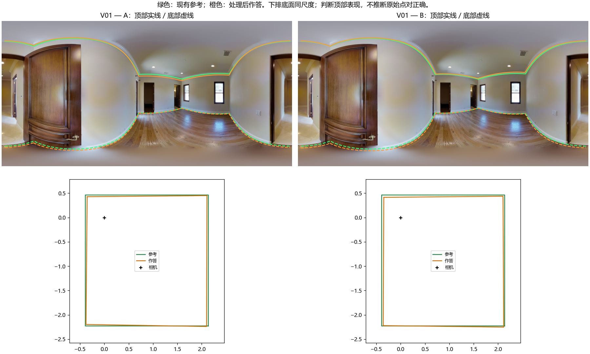
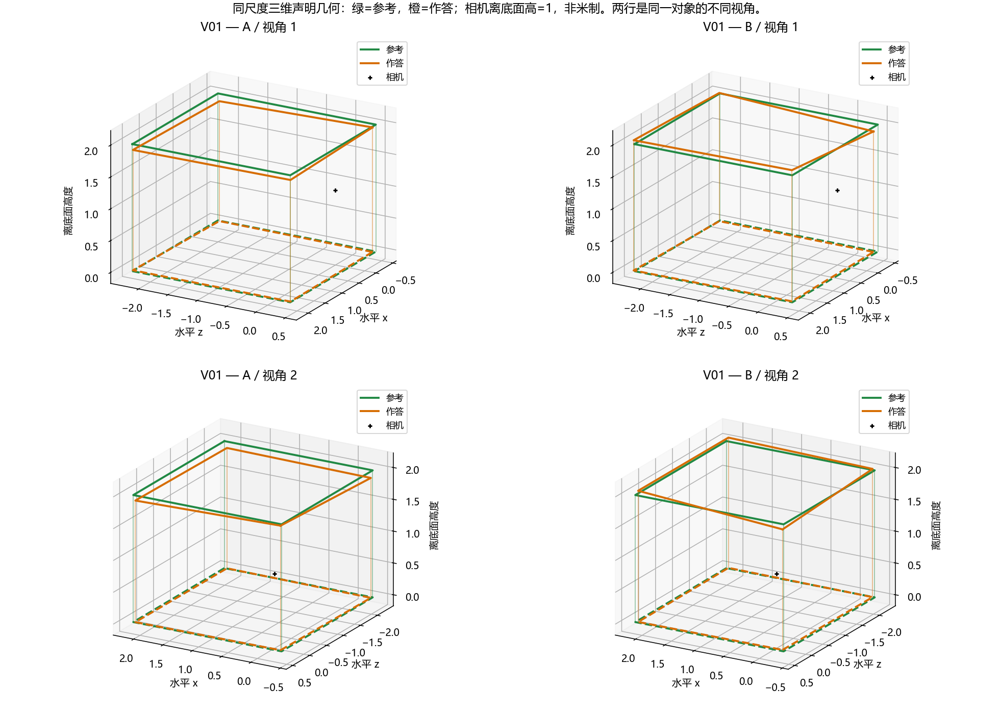
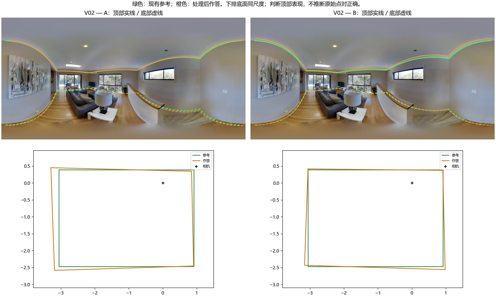
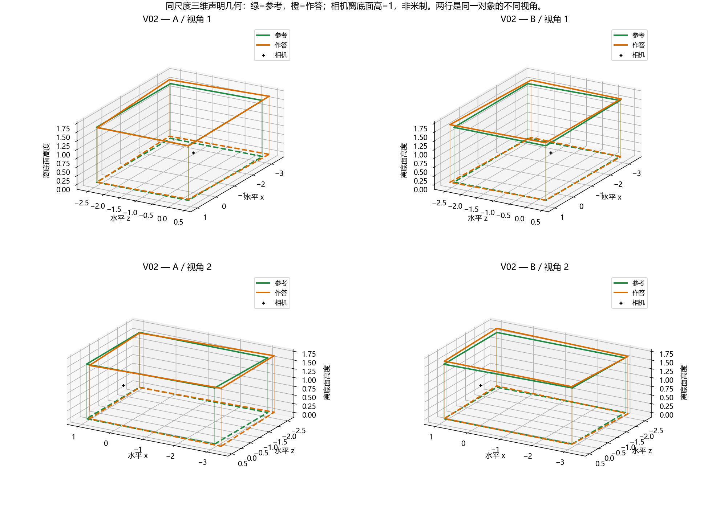

人工答复另存 human_review_feedback.json；目前底面及二维意见已收到，三维高度待续审。未展示候选分数，也没有预设正确答案。请只比较顶部表现，底面辅助查看其他差异。近似或无法判断均为有效回答。绿色参考不是不可质疑的真值；如参考不可信请直接指出。这是既有开发图片，不是独立验证。图片是原照片上的声明几何投影，不推断边界可见性。
仅比较顶部边界/高度表现：A较好、B较好、近似，还是无法判断？差异是否明显？哪些可见位置支持判断？


三维为处理后声明几何，非房间实测；绿色参考也可能有误。请区分底面、二维顶部投影和三维高度判断。
答复格式：V01：A / B / 近似 / 无法判断；差异：不明显 / 明显 / 不确定；位置与理由。
仅比较顶部边界/高度表现：A较好、B较好、近似，还是无法判断？差异是否明显？哪些可见位置支持判断？


三维为处理后声明几何，非房间实测；绿色参考也可能有误。请区分底面、二维顶部投影和三维高度判断。
答复格式：V02：A / B / 近似 / 无法判断；差异：不明显 / 明显 / 不确定；位置与理由。